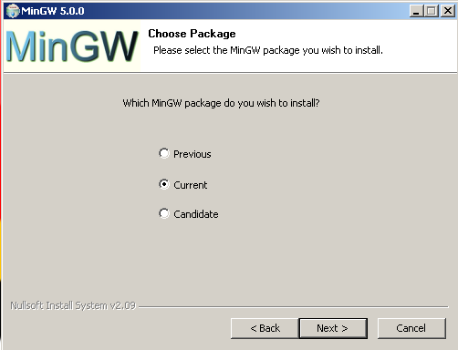
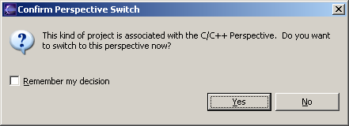
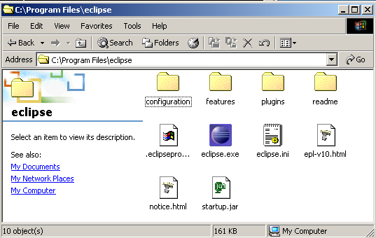
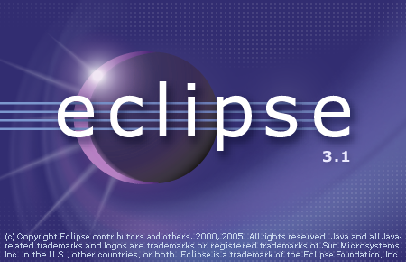
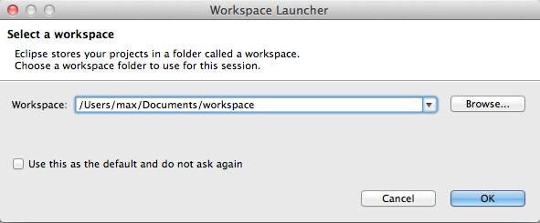
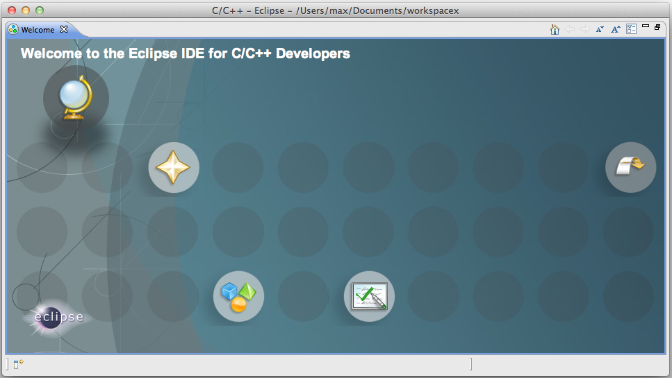
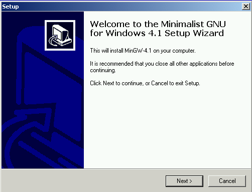
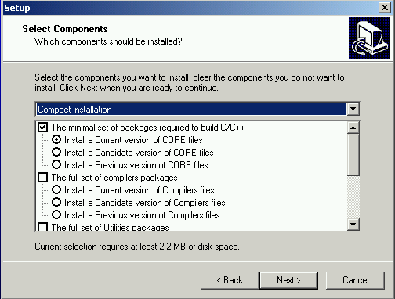

| Older Instructions | ||
|---|---|---|
|
|
|
|
| Common Problems | Feedback | |
Sometimes you may not be happy with the current version of a certain program. I have left instructions for the older versions here in case you need them:
This is the old MSYS/MinGW installation used before the new mingw-get-inst was available.
First, you need to download MinGW. You can either click through the websites mentioned above or go directly to the MinGW download area. Look for the Package "Automated MinGW Installer". There, download the file ending in .exe. The file name should be something like "MinGW-5.1.4.exe". You can also download MinGW Version 5.1.4 from the link given here.
You may also download an older version, and follow the instructions given in Older Instructions:
Most of the options in the MinGW 5 installer are pretty straightforward. I will point out some of the more tricky options.
The first one of such options is which "MinGW" package to install. Any of those should work just fine, but I would recommend Current.

MinGW will ask which components to install. Either select All or at least make sure that you have the g++ compiler checked. This is needed for C++ support.
When asked for the install folder, please do not change it. You will have a lot of trouble later on, especially if you chose a path that contains spaces.
")
That's already it for MinGW. There are two more steps: MSYS and the Environment Variables.
Checkpoint: To test if everything worked, please reboot. Then open up a terminal. (Start/Run, type CMD). Try these commands:
gcc --version
should print the version of gcc. If you get a "File not found", try logging out and logging back in, or even rebooting your computer. If it still does not work, you have not installed MinGW correctly. You may also need to set your environment variables manually (see below).
g++ --version
should print the version for g++. You did select the "g++ compiler" I hope. If not, install again!
This section is completely optional. You may skip it and go directly to MSYS 1.0.11.
If you want to use the debugger, you may have to install it separately. This is the case with MinGW 5.0.2, it may be different in other versions. Download it from the same page, look for a package starting with gdb and ending with .exe. At the time of this writing (Apr 29) the current version was "gdb-5.2.1-1.exe". Install (double-click) that .exe, select all the default options (make sure you select the same MinGW directory as you did during the MinGW install).
I have received a report that gdb-6.3-2 does not work. So I would advise using the older version or waiting for a newer one.
Checkpoint:
gdb --version
should print the gdb version. This is optional.
Unfortunately MinGW is not enough. We also need the MSYS tools from the same download page. Go there again, to the "Current" section and look for "MSYS Base System". Again, look for the file ending in .exe, as this time: "MSYS-1.0.11.exe". You may have to expand the "Release Candidate" section. Or you may use the link here to MSYS-1.0.11.exe. Download it and start it. You should get a window like this:

If you accept all the default options, after a while there should be a black and white window, similar to this:

To continue the install type in y and then Enter. The next question reads like this:
Which you can also answer with y Enter. The next question is a little bit more tricky:

What they want to know is where you installed MinGW to and that you replace all backward slashes (\) by forward slashes (/). If you followed the instructions, the answer here will be:
C:/MinGW
Caveat: If you have not used the default paths, but instead have installed MinGW in a different location, such as C:/Program Files/MinGW, where the path contains spaces and / or is longer than 8 characters you may have to replace that particular path component with its DOS short pathname, such as C:/PROGRA~1/mingw.
Caveat2: The installer may be case sensitive. Please make sure you have written MinGW in the same capitalization as during your first install, in some cases you will have to enter c:/mingw (note capitalization!).
The very last question just asks you to press a key:
Where you can press any key you like to continue. Setup will come back and ask you if you want to read a welcome note and the README file. You probably don't want either one, but it does not hurt to look. Anyways, once you hit "Finish" you are done with the setup. Now you have to set up your Path environment variable.

This is only required if you did not download the CDT version as described above. Please check if you are able to create a new C++ project (as described in Hello, World!) before going through this section!

This will show you the list of available software update sites. If you are luck you already have the CDT update site configured. Search for an entry which contains the String "cdt", for example
http://download.eclipse.org/tools/cdt/releases/ganymede.

If there is no site for cdt available, go to "Manage Sites", and you will get a list of sites.
Again, search for a site containing "CDT". If there is no site available, add it (using the "Add..." button), adding
http://download.eclipse.org/tools/cdt/releases/ganymede (the address may be different in future versions of Eclipse, this is for 3.4!)
Also, make sure the checkbox next to the Address is checked. Otherwise the site is configured, but ignored by Eclipse. Leave this page and go back to the main Software update page.
Expand the CDT site, and find the latest version of the CDT. Make sure you select at least the following:

The select "Install..."
You will have to confirm the selection with "Finish"
Downloading and installing will take a while. Once its done it will ask you to restart Eclipse. This is a good idea, so select "Yes".

Once Eclipse has restarted you now need to configure it for your computer.
Once you are in Eclipse, you are given an empty workspace. You now have to start a new project. To do so, select "File" / "New" / "Project...". Expand the section "C++" and select "Managed Make C++ Project", then click "Next >".

On the next screen, you have to give your project a name. In this case, it will be "HelloWorld", however, you may use any name you like. Leave the "Use default" in "Project Contents" checked.

The next two settings about "Project Type" and additional settings are usually OK, so we'll just leave them:

Eclipse will now generate a few things, and then ask you if you want to switch to the C/C++ Perspective. This is a good idea, so say yes.

Great. You have a project now. However, it currently does not have any files. So select "File" / "New" / "C Source File". It will then ask you for the name of the file, type in something like "main.cpp".

You will immediately get an editor window for your file. Eclipse will also auto-build your project every time you save. So type in something like this and hit save, and it should compile automatically:

Now here comes the tricky part: On the left pane, select "C/C++ Projects", expand "Binaries" and you should see and executable (HelloWorld.exe). Now right-click that executable, and select "Run" / "Run Local C/C++ Application". If everything goes well your output will be in the bottom right window in the "Console" tab and it should say "Hello, World".

Congratulations! You have successfully installed a compiler, a build system and an IDE. You have successfully created, edited, compiled and run a project. You should now be able to start your own projects!
Now we are finally ready to install Eclipse. Go to the
Eclipse website and look for "Downloads". It will automatically try to figure out your OS and give you an option like "Download now: Eclipse Platform SDK 3.1, Windows.". Do it. You will receive a .ZIP file. Use either
FilZip or your favorite ZIP Program (Windows XP and Mac OS X have .ZIP support build in) to unpack the file. Move the unpacked folder to any location, for example C:\Program Files\eclipse. You can now start Eclipse by double-clicking it.

However you installed eclipse, you should now be able to run it. Double-click the icon or start the appropriate script in UNIX and Eclipse's splash-screen will appear:

Immediately after that Eclipse will ask you for your workspace location. It defaults to: C:\Program Files\eclipse\workspace which is actually very bad. Depending on where you want to use Eclipse, please set your workspace to the appropriate folder. If you are in a computer lab, check their policy on personal home folders. If you are on your own computer, a place within your personal settings is usually best:

If you always want to use the same workspace, you may select the Use this as the default... and you'll never have to worry about workspaces again. This is usually a good idea once you've used Eclipse for a while. Finally Eclipse starts up with the welcome screen:

And if you select the "Go to the workbench" in the top right corner, then you are right in Eclipse and you can start developing in Java. However, since we want to develop in C++ just continue with the next section.
Eclipse by default comes with support for programming Java, the support for C/C++ (the C Development Toolkit) has to be installed as an update.
In the "Help" menu select "Software Updates" and the "Find and Install...". You should get something like:
Select "Search for new features to install", and then "Next >". You should get:

Leave "Ignore features not applicable to this environment" checked and de-select all update sites (you will probably have less in there than I do). Select "New Remote Site" and then enter the following information:
Note: What name you enter does not matter. Here is the URL for cut-n-paste:
http://download.eclipse.org/tools/cdt/releases/eclipse3.1

Hit "OK". Now select "Eclipse CDT" and then "Next >". It should connect to the Eclipse CDT update site and look for the newest version. Then it displays a window like this one:

Select the latest version of the "Eclipse C/C++ Development Tools". (3.0.1 at the time of this writing) Do not select any other features. Hit "Next >".
In the next window, you will have to "accept" the license, and then select "Next >".
It will again show you an overview, which you can just accept and select "Finish".
It will warn you that the Eclipse CDT is an "unsigned feature". But you can just ignore that and select "Install All".

Downloading and installing will take a while. Once its done it will ask you to restart Eclipse. This is a good idea, so select "Yes".
Once Eclipse has restarted you now need to configure it for your computer.
Eclipse 3.1 with CDT 3.0.0 (and 3.0.1) has a bug on windows! If you are on windows, please close eclipse, and delete the file spawner.dll in eclise\plugins\org.eclipse.cdt.core.win32_3.0.0\os\win32\x86. This bug appears every time you try and run short programs (they will not show any output). More information is available in Eclipse Bug 102043. This bug is fixed in CDT 3.0.2.
MinGW 4.x comes with a new installer that asks much more questions than the old one. The current (Aug 05) version is MinGW 4.1.1.
Please note: The MinGW 4.x installer downloads parts of the MinGW suite during the install! You must have an internet connection during the install. If this is not an option for you, download the last version (3.1)

Most installation options are pretty straight forward. You will have to accept the license agreement:
It will ask you for a download mirror. Of course, you should pick one close to your country. If you are installing from home in the us, use a commercial mirror, if you are installing from a university connection, chose a university mirror.
When installing MinGW, it is advisable to use the default directory C:\MinGW. Do not use a path that contains spaces, this will give you problems later on.

If all you need MinGW for is compiling your programs from within Eclipse, the Compact install should be enough:

Next, it will ask you for additional tasks to perform. Select all of them:
MinGW will download and install your selected components. After a little while your installation is done. You will now need to install MSYS.
At the time of this writing this was "Download MinGW-3.1.0-1.exe", but the version number may be higher now. Once downloaded, start the program. It should look similar to this:

If you accept all the default options MinGW should install just fine.
|
|

|
|
| Common Problems | Feedback |